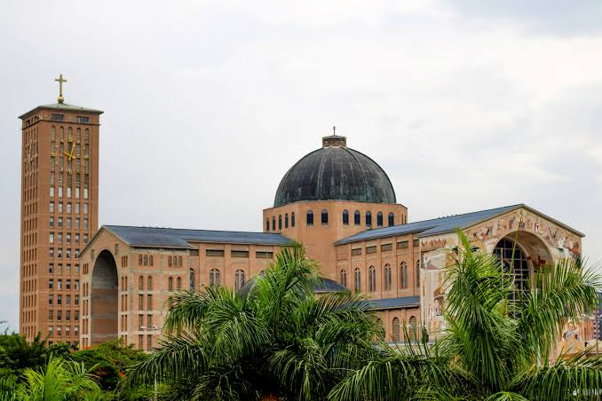

Arquitetura e criação
Igrejas, capelas e espaços inspirados na tradição católica, feitos para receber e reunir.
Grupo JotaDablio · desde 2019
Uma comunidade que transforma o Roblox em lugar de encontro, formação e evangelização para as juventudes.
Conheça o projetoUm projeto feito em comunidade
O Grupo JotaDablio de Evangelização Virtual nasceu em 2019 da vontade de estar perto das juventudes também nos espaços digitais. No Roblox, criamos ambientes inspirados na tradição católica para acolher, aprender e conviver.
Nosso trabalho é virtual, comunitário e formativo. A Arquidiocese de Aparecida no Roblox é um dos projetos desenvolvidos pelo grupo, com espaços de encontro e atividades construídos por seus participantes.
Uma história em construção
Uma ideia de acolhida cresceu junto com quem encontrou nela um lugar para pertencer.
Surge o Grupo JotaDablio, com a ideia de reconhecer os ambientes virtuais como espaços de encontro e missão junto às juventudes.
Durante a pandemia, começa a construção de uma réplica virtual do Santuário Nacional de Aparecida. A pequena capela dá lugar a uma comunidade em expansão.
A Arquidiocese de Aparecida no Roblox une esforços com a Cidade Estado do Vaticano no Roblox em uma etapa de colaboração entre comunidades.
Novas iniciativas comunitárias e ordens virtuais ampliam as possibilidades de formação, convivência e representação no projeto.
Cargos, instituições e celebrações no jogo fazem parte de uma representação narrativa e comunitária.
Experiências para viver juntos
Cada encontro é uma oportunidade de aprender, criar e fazer comunidade com respeito e responsabilidade.
Igrejas, capelas e espaços inspirados na tradição católica, feitos para receber e reunir.
Momentos de convivência, eventos temáticos e celebrações representativas no jogo.
Atividades educativas sobre Bíblia, história da Igreja, devoções e fundamentos da fé.
Grupos e iniciativas virtuais que representam diferentes formas de serviço e vida comunitária.

Arquitetura como lugar de encontroFé, cuidado e responsabilidade
O jogo é um ponto de partida para a convivência, o aprendizado e a busca por uma comunidade real. Incentivamos o respeito às pessoas, às regras da plataforma e à vida da Igreja.
Celebrações e funções religiosas no Roblox são representações virtuais. Elas não são sacramentos, não substituem a participação na vida da Igreja e não conferem ministérios ou autoridade canônica.
A porta está aberta
Procure pelo Grupo JotaDablio ou pela Arquidiocese de Aparecida no Roblox. Confira o nome da comunidade e as orientações antes de participar de uma experiência.
Buscar no RobloxA participação deve seguir as regras do Roblox. Nunca compartilhe senha, dados pessoais ou informações de contato com desconhecidos.
Evangelizar é a nossa missão.
”